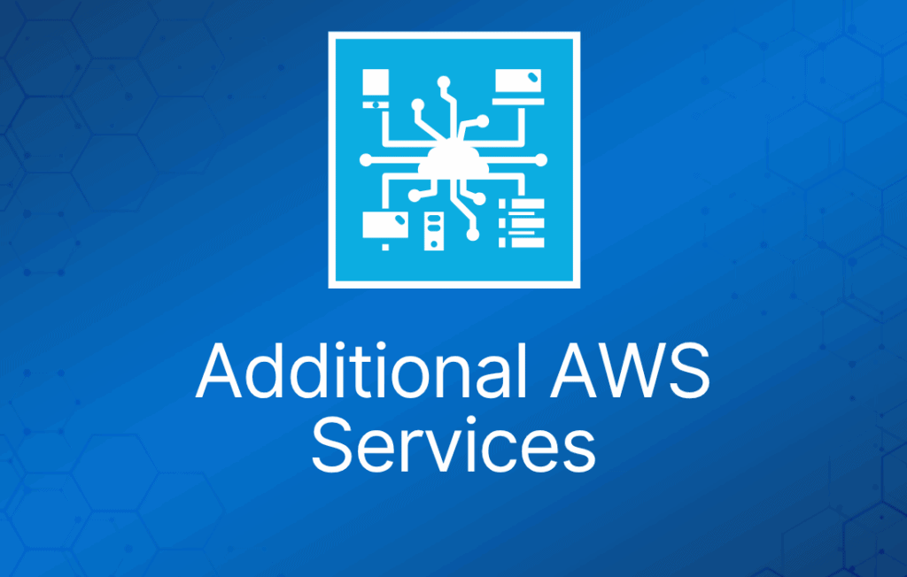

还有一些其他的 AWS 服务和工具可能会在考试中出现。通常你不需要深入了解它们，但需要理解它们是什么以及用途是什么。
在本页中，你可以找到其中一些服务和工具的概要介绍以及更多信息链接。
考试提示：在参加考试之前，建议浏览一遍 AWS 控制台，挑出你不熟悉的服务，并通过 AWS 文档对它们做一些了解。
注意：如果某个服务开始频繁出现在考试中，它可能会被移到对应 AWS 服务类别的主要 cheat sheet 中。
计算（Compute）
Amazon Elastic Container Service for Kubernetes (EKS)
- Amazon Elastic Container Service for Kubernetes (EKS) 是一项托管的 Kubernetes 服务，让你可以轻松在 AWS 上运行 Kubernetes，无需自行安装、运维和维护 Kubernetes 控制平面。
- EKS 已通过 Kubernetes 一致性认证，因此运行在原生上游 Kubernetes 上的现有应用与 Amazon EKS 兼容。
- EKS 自动管理 Kubernetes 控制平面节点的可用性和可扩展性，这些节点负责启动和停止容器、在虚拟机上调度容器、存储集群数据等任务。
- EKS 会自动检测并替换每个集群中不健康的控制平面节点。
- 已正式发布，但目前仅在部分区域可用。
- https://aws.amazon.com/eks/features/
数据库（Database）
Amazon Neptune
- Amazon Neptune 是一项快速、可靠、完全托管的图数据库服务，可以轻松构建和运行处理高度关联数据集的应用。
- 借助 Amazon Neptune，你可以创建复杂的交互式图应用，在毫秒级内查询数十亿条关系。
- 针对高度关联数据的 SQL 查询很复杂，且难以进行性能调优。Amazon Neptune 允许你使用流行的图查询语言 Apache TinkerPop Gremlin 和 W3C 的 SPARQL 来执行功能强大、易于编写且在关联数据上性能良好的查询。
- https://aws.amazon.com/neptune/features/
迁移（Migration）
AWS Migration Hub
- AWS Migration Hub 提供一个单一入口，用于跟踪跨多个 AWS 和合作伙伴解决方案的应用迁移进度。
- 使用 Migration Hub，你可以选择最适合自己需求的 AWS 和合作伙伴迁移工具，同时获得整个应用组合迁移状态的可见性。
- 例如，你可以使用 AWS Database Migration Service、AWS Server Migration Service，以及 ATADATA ATAmotion、CloudEndure Live Migration 或 RiverMeadow Server Migration SaaS 等合作伙伴迁移工具，来迁移一个由数据库、虚拟化 Web 服务器和裸金属服务器组成的应用。
- 使用 Migration Hub，你可以查看应用中所有资源的迁移进度。
- https://aws.amazon.com/migration-hub/features/
AWS Database Migration Service
- AWS Database Migration Service 帮助你快速、安全地将数据库迁移到 AWS。
- 迁移期间源数据库保持完全正常运行，最大限度减少依赖该数据库的应用的停机时间。
- AWS Database Migration Service 可以在大多数广泛使用的商业和开源数据库之间迁移数据。
- AWS Database Migration Service 支持同构迁移（如 Oracle 到 Oracle），也支持不同数据库平台之间的异构迁移（如 Oracle 或 Microsoft SQL Server 到 Amazon Aurora）。
- 借助 AWS Database Migration Service，你可以以高可用方式持续复制数据，并通过将数据流式传输到 Amazon Redshift 和 Amazon S3，将数据库整合为 PB 级数据仓库。
- https://aws.amazon.com/dms/
AWS Server Migration Service
- AWS Server Migration Service (SMS) 是一项无代理服务，让你能够更轻松、更快速地将数千个本地工作负载迁移到 AWS。
- AWS SMS 允许你自动化、调度并跟踪运行中服务器卷的增量复制，让你更容易协调大规模服务器迁移。
- https://aws.amazon.com/server-migration-service/
网络与内容分发（Networking & Content Delivery）
Amazon API Gateway
- Amazon API Gateway 是一项完全托管的服务，让开发人员能够轻松创建、发布、维护、监控和保护任意规模的 API。
- 只需在 AWS 管理控制台中点击几下，你就可以创建一个 API，作为应用访问后端服务中数据、业务逻辑或功能的"前门"。
- 后端服务可以包括 Amazon Elastic Compute Cloud (Amazon EC2)、运行在 AWS Lambda 上的代码，或任何 Web 应用。
- https://aws.amazon.com/api-gateway/features/
开发者工具（Developer Tools）
AWS CodeStar
- AWS CodeStar 让你能够在 AWS 上快速开发、构建和部署应用。AWS CodeStar 提供统一的用户界面，让你可以在一个地方轻松管理软件开发活动。
- 借助 AWS CodeStar，你可以在几分钟内搭建起整个持续交付工具链，从而更快地发布代码。AWS CodeStar 让整个团队可以轻松安全地协作，你可以方便地管理访问权限，并向项目添加所有者、贡献者和查看者。
- 借助 AWS CodeStar，你可以使用各种项目模板开始在 Amazon EC2、AWS Lambda 和 AWS Elastic Beanstalk 上开发应用。
- AWS CodeStar 项目支持多种流行编程语言，包括 Java、JavaScript、PHP、Ruby 和 Python。
- https://aws.amazon.com/codestar/features/
AWS CodeCommit
- AWS CodeCommit 是一项完全托管的源代码托管服务，托管安全的基于 Git 的代码仓库。
- 它让团队能够在安全且高度可扩展的生态系统中轻松协作开发代码。
- CodeCommit 免去了你运维自有源代码托管系统或担心其基础设施扩展的需要。
- 你可以使用 CodeCommit 安全地存储从源代码到二进制文件的任何内容，并且它可以与你现有的 Git 工具无缝协作。
- https://aws.amazon.com/codecommit/features/
AWS CodeBuild
- AWS CodeBuild 是一项完全托管的持续集成服务，可以编译源代码、运行测试并产出可直接部署的软件包。
- 使用 CodeBuild，你无需预置、管理和扩展自己的构建服务器。CodeBuild 持续扩展并并发处理多个构建，因此你的构建不会排队等待。
- 你可以使用预打包的构建环境快速上手，也可以创建使用自有构建工具的自定义构建环境。
- 使用 CodeBuild，你按使用的计算资源以分钟计费。
- https://aws.amazon.com/codebuild/features/
AWS CodeDeploy
- AWS CodeDeploy 是一项完全托管的部署服务，可将软件部署自动化到 Amazon EC2、AWS Lambda 以及你的本地服务器等多种计算服务。
- AWS CodeDeploy 让你能够更轻松地快速发布新功能，帮助你在应用部署期间避免停机，并处理更新应用的复杂性。
- 你可以使用 AWS CodeDeploy 自动化软件部署，消除容易出错的手动操作。该服务可根据你的部署需求扩展，从单个 Lambda 函数到数千个 EC2 实例。
- https://aws.amazon.com/codedeploy/features/
AWS CodePipeline
- AWS CodePipeline 是一项完全托管的持续交付服务，帮助你自动化发布流水线，实现快速可靠的应用和基础设施更新。
- CodePipeline 根据你定义的发布模型，在每次代码变更时自动执行发布流程的构建、测试和部署阶段。
- 这使你能够快速可靠地交付功能和更新。
- 你可以轻松将 AWS CodePipeline 与 GitHub 等第三方服务或你自己的自定义插件集成。
- https://aws.amazon.com/codepipeline/features/
AWS X-Ray
- AWS X-Ray 帮助开发人员分析和调试生产环境中的分布式应用，例如使用微服务架构构建的应用。
- 借助 X-Ray，你可以了解应用及其底层服务的运行状况，从而识别并排查性能问题和错误的根本原因。
- X-Ray 提供请求在应用中流转的端到端视图，并展示应用底层组件的拓扑图。
- 你可以使用 X-Ray 分析开发中和生产中的应用，从简单的三层应用到由数千个服务组成的复杂微服务应用。
- https://aws.amazon.com/xray/features/
- https://aws.amazon.com/servicecatalog/features/
AWS Managed Services
- AWS Managed Services 为你的 AWS 基础设施提供持续管理，让你可以专注于自己的应用。
- 通过实施维护基础设施的最佳实践，AWS Managed Services 帮助降低你的运维开销和风险。
- AWS Managed Services 自动化常见运维活动，如变更请求、监控、补丁管理、安全和备份服务，并提供预置、运行和支持基础设施的全生命周期服务。
- AWS Managed Services 遵循 ITIL® 最佳实践，提供一致的运维管理和可预测的结果，并提供工具和自动化来提高效率、降低运维开销和风险。
- https://aws.amazon.com/managed-services/#
分析（Analytics）
Amazon Athena
- Amazon Athena 是一项交互式查询服务，可以使用标准 SQL 轻松分析 Amazon S3 中的数据。
- Athena 是无服务器的，因此无需管理任何基础设施，你只需为运行的查询付费。
- 只需在 AWS 管理控制台中点击几下，客户就可以将 Athena 指向存储在 S3 中的数据，并开始使用标准 SQL 运行即席查询，在几秒内获得结果。
- 你可以使用 Athena 处理日志、执行即席分析以及运行交互式查询。
- Athena 自动扩展——并行执行查询——因此即使面对大数据集和复杂查询，结果也能快速返回。
- https://aws.amazon.com/athena/features/
Amazon EMR
- Amazon Elastic Map Reduce (EMR) 提供托管的 Hadoop 框架，可以轻松、快速且经济高效地在可动态扩展的 Amazon EC2 实例上处理海量数据。
- 你还可以在 Amazon EMR 中运行其他流行的分布式框架，如 Apache Spark、HBase、Presto 和 Flink，并与 Amazon S3 和 Amazon DynamoDB 等其他 AWS 数据存储中的数据交互。
- Amazon EMR 安全可靠地处理广泛的大数据用例，包括日志分析、Web 索引、数据转换（ETL）、机器学习、金融分析、科学模拟和生物信息学。
- https://aws.amazon.com/emr/features/
Amazon CloudSearch
- Amazon CloudSearch 是 AWS 云中的一项托管服务，可以简单且经济高效地为你的网站或应用搭建、管理和扩展搜索解决方案。
- Amazon CloudSearch 支持 34 种语言以及高亮显示、自动补全和地理空间搜索等流行搜索功能。
- https://aws.amazon.com/cloudsearch/
Amazon Elasticsearch
- Amazon Elasticsearch Service 是一项完全托管的服务，让你可以轻松部署、保护、运维和扩展 Elasticsearch，以实时搜索、分析和可视化数据。
- 借助 Amazon Elasticsearch Service，你可以获得易用的 API 和实时分析能力，以支持日志分析、全文搜索、应用监控和点击流分析等用例，并具备企业级的可用性、可扩展性和安全性。
- https://aws.amazon.com/elasticsearch-service/features/
Amazon Kinesis
- Amazon Kinesis 可以轻松收集、处理和分析实时流数据，让你能够及时获得洞察并对新信息快速做出反应。
- Kinesis 服务有四种类型：
- Kinesis Video Streams 可以轻松地将视频从连接的设备安全地流式传输到 AWS，用于分析、机器学习（ML）和其他处理。
- Kinesis Data Streams 让你能够构建自定义应用来处理或分析流数据，以满足特定需求。
- Kinesis Data Firehose 是将流数据加载到数据存储和分析工具的最简单方式。
- Amazon Kinesis Data Analytics 是处理和分析实时流数据的最简单方式。
- https://aws.amazon.com/kinesis/
- https://digitalcloud.training/amazon-kinesis/
AWS Data Pipeline
- AWS Data Pipeline 是一项 Web 服务，帮助你按指定的时间间隔在不同的 AWS 计算和存储服务以及本地数据源之间可靠地处理和移动数据。
- 借助 AWS Data Pipeline，你可以定期访问存储位置的数据，大规模地转换和处理数据，并将结果高效地传输到 Amazon S3、Amazon RDS、Amazon DynamoDB 和 Amazon EMR 等 AWS 服务。
- AWS Data Pipeline 帮助你轻松创建具有容错能力、可重复且高度可用的复杂数据处理工作负载。
- https://aws.amazon.com/datapipeline/
AWS Glue
- AWS Glue 是一项完全托管的提取、转换和加载（ETL）服务，让客户可以轻松为分析准备和加载数据。
- 只需在 AWS 管理控制台中点击几下，你就可以创建并运行 ETL 作业。
- 你只需将 AWS Glue 指向存储在 AWS 上的数据，AWS Glue 就会发现你的数据，并将相关元数据（例如表定义和 schema）存储在 AWS Glue Data Catalog 中。
- 数据一旦被编目，就可以立即被搜索、查询并用于 ETL。
- AWS Glue 会生成执行数据转换和数据加载流程的代码。
- https://aws.amazon.com/glue/features/
媒体服务（Media Services）
Amazon Elastic Transcoder
- Amazon Elastic Transcoder 提供云端媒体转码。
- 它旨在为开发人员和企业提供一种高度可扩展、易于使用且经济高效的方式，将媒体文件从源格式转换（或"转码"）为可在智能手机、平板电脑和 PC 等设备上播放的版本。
- https://aws.amazon.com/elastictranscoder/
移动服务（Mobile Services）
AWS AppSync
- AWS AppSync 让构建数据驱动的移动和浏览器应用变得容易，通过在设备连接时保持数据更新、离线时允许应用使用本地数据、设备重新连接时同步数据，提供响应迅速、可协作的体验。
- AWS AppSync 使用开放标准 GraphQL 查询语言，因此你只需几行代码就可以请求、更改和订阅所需的精确数据。
- https://aws.amazon.com/appsync/product-details/
AWS Device Farm
- AWS Device Farm 是一项应用测试服务，让你可以在多台设备上同时测试 Android、iOS 和 Web 应用并与之交互，或在设备上实时复现问题。
- 查看视频、截图、日志和性能数据，以便在发布应用之前定位并修复问题、提升质量。
- https://aws.amazon.com/device-farm/
终端用户计算（End User Computing）
Amazon Workspaces
- Amazon WorkSpaces 是一项托管的安全云桌面服务。你可以使用 Amazon WorkSpaces 在几分钟内预置 Windows 或 Linux 桌面，并快速扩展以向全球员工提供数千个桌面。
- Amazon WorkSpaces 为你提供了一种简单的方式，向终端用户提供安全、托管、基于云的虚拟桌面体验。
- 与传统的本地虚拟桌面基础设施（VDI）解决方案不同，你无需担心采购、部署和管理复杂的环境——Amazon WorkSpaces 会承担繁重的工作，提供完全托管的服务。
- https://aws.amazon.com/workspaces/features/
AWS AppStream
- 完全托管的非持久化应用流式传输服务。
- Citrix XenApp 等流行产品的替代方案。
- https://aws.amazon.com/appstream2/features/
AWS WorkLink
- 通过手机浏览器提供对内部网站和 Web 应用的安全一键访问。
- 无需 VPN 客户端或 App。
- https://aws.amazon.com/worklink/features/
AWS WorkDocs
- 完全托管的安全内容创建、存储和协作服务。
- 创建、编辑和共享集中存储在 AWS 上的内容。
- https://aws.amazon.com/workdocs/features/
物联网（Internet of Things, IoT）
AWS IoT Core
- 描述了嵌入了传感器或软件的物理对象所组成的网络。
- 每个 IoT 设备都可以与其他设备和系统通信并交换数据。
- 用例包括：
- 智能家居自动化。
- 智慧医疗。
- 制造业。
- 农业。
- 允许你将 IoT 设备连接到 AWS 云，无需预置或管理服务器。
- 可支持数十亿台设备和数万亿条消息。
- https://aws.amazon.com/iot-core/features/